Vademecum e libro di istruzioni per Linux · Debian, Ubuntu, Mint, FeniceOS
Imparare il digitale, con calma e senza Internet.
Lezioni guidate · Quiz con attestato · Cultura generale Voci italiane, maschili e femminili · Palestra Quadro dell'aula · IA locale facoltativa
100% offlinePrivacy per costruzioneAnche su PC ricondizionatiDebian · Ubuntu · Mint · FeniceOSVoci italiane incluseSoftware libero · MIT
Danilo D'AuriaIdeazione e sviluppo · Tecnico IT & Divulgatore Digitale per il Sociale
v3.0.0Ottobre 2026
Come usare questo vademecum
Questo libretto accompagna chi installa il Professore Digitale su computer Linux, chi conduce gli incontri e chi lo usa per imparare.
Non serve leggerlo tutto: ogni capitolo sta in piedi da solo. Esiste un vademecum gemello per i computer Windows (da XP a Windows 11):
le lezioni, i quiz, la guida e i pacchetti di contenuti sono gli stessi.
Se siete…
Leggete prima
Chi installa il programma (tecnico, volontario, rigeneratore di PC)
Capitoli 2, 3, 14, 15, 19 e 20
Insegnante o facilitatore che guida un gruppo
Capitoli 4–13, 15 e 16
Allievo che usa il programma da solo
Capitoli 4, 5, 6, 8, 9, 10, 12 e il Glossario (21)
Convenzioni
I comandi da scrivere nel Terminale sono in carattere a macchina: si possono copiare e incollare; le parti dopo # sono spiegazioni e non vanno scritte.
I tasti sono indicati così: Invio, Ctrl + Z. I percorsi dei menu sono in grassetto: Applicazioni → Istruzione.
Il simbolo ~ indica la vostra cartella personale. I riquadri verdi contengono consigli, quelli gialli attenzioni.
Novità della versione 3.0Voci italiane maschili e femminili già incluse (Riccardo e Paola) · Quiz e attestati con il vostro nome, da stampare o salvare in PDF ·
Cultura generale con 26 lezioni · pagine dedicate al libro Tecnologia Gentile e a FeniceOS · Palestra con 11 esercizi ·
quadro dell'aula in rete locale · pulsante 🖨️ Stampa · indicatore Online · il Professore saluta, dà consigli, ricorda i promemoria e si congeda con il pulsante 🚪 Esci.
Professore Digitale – Cattedra Digitale Portatile, versione 3.0.0 per Linux.
Ideato e sviluppato da Danilo D'Auria, Tecnico IT & Divulgatore Digitale per il Sociale — danilodauria.site@gmail.com
Software libero rilasciato con licenza MIT. Componenti di terze parti: Mermaid (MIT), Piper (MIT) e le voci italiane «Paola» e «Riccardo»;
quelli facoltativi (espeak-ng, Pico, Vosk, Ollama, modelli di IA) hanno le proprie licenze, indicate in /usr/share/doc/professore-digitale/copyright.
Questo vademecum può essere stampato, copiato e distribuito liberamente, anche allegato ai computer rigenerati.
Indice
1Benvenuti nella Cattedra DigitaleChe cos'è, a chi serve, i suoi principi, cosa trovate dentro
2Di cosa avete bisognoDistribuzioni, computer, voci, file forniti
3InstallazionePacchetto .deb, aggiornamento dalla 2.x, versione portatile
4Il primo avvioLa finestra, la pagina Inizio, la barra in alto, il Professore e i suoi occhi
5Le LezioniIl percorso, i passi, lo schema, il quiz
6Chiedi al ProfessoreDomande scritte e a voce, guida interna e IA
7La LavagnaSchemi pronti e disegno libero
8La PalestraUndici esercizi di mouse, tastiera e prudenza
9Quiz e attestatiI grandi quiz, la soglia del 70%, l'attestato con il vostro nome
10Cultura generaleStoria, geografia, scienze, arte e attualità
11Tecnologia Gentile e FeniceOSIl libro e il sistema operativo di Danilo D'Auria
12Voci, saluti, promemoria, stampa e «Online»Il Professore che vi accoglie, vi consiglia e vi saluta
13Impostazioni e accessibilitàVista, voce, IA, dati, aggiornamenti
14IA, microfono e voci: i componenti facoltativiOllama, riconoscimento vocale, voci naturali, aule senza rete
15Il quadro dell'aulaFacilitatore e allievi in rete locale, messaggi, elenco, firewall
16Guida per il facilitatorePreparare l'aula, condurre un incontro, consigli pratici
17Privacy e sicurezzaDove stanno i dati, le due eccezioni dichiarate, cosa non fa
18Manutenzione, aggiornamenti e disinstallazioneBackup, aggiornare dalla 2.x, pulizia radicale
21Glossario sempliceLe parole del digitale spiegate in breve
§§c1§§
1
CAPITOLO
Benvenuti nella Cattedra Digitale
Il Professore Digitale è un insegnante paziente che vive dentro il computer. Spiega l'informatica di base con parole semplici,
disegna schemi alla lavagna, risponde alle domande a voce, fa esercitare mouse e tastiera e, alla fine del percorso, consegna un attestato.
E lo fa senza bisogno di Internet.
Figura 1. La pagina Inizio della versione 3.0: il Professore saluta l'allieva per nome,
propone la prossima lezione e mostra i progressi; sotto, i riquadri delle sezioni. In alto le «pastiglie» di stato e l'indicatore verde Online.
A chi è rivolto
È pensato per i luoghi dove il divario digitale si sente di più: centri anziani, circoli culturali, biblioteche, parrocchie, scuole,
associazioni e famiglie. Funziona bene anche dove la connessione è assente o instabile, perché tutto il lavoro avviene sul computer, e gira sui
computer ricondizionati con distribuzioni Linux leggere, come FeniceOS.
I principi del progetto
Offline per davvero. Lezioni, quiz, guida, lavagna, palestra e voci funzionano senza rete. Internet serve solo, e una volta sola, per aggiungere i componenti facoltativi.
Privacy per costruzione. Domande, risposte e progressi restano sul computer. Nessun account, nessun tracciamento, nessun abbonamento.
Le sole due eccezioni (l'indicatore «Online» e il quadro dell'aula) sono dichiarate, limitate e si possono spegnere (capitolo 17).
Tecnologia gentile e riuso. Il programma è leggero e gira su computer ricondizionati con distribuzioni Linux leggere: meno rifiuti elettronici, più persone connesse.
Non si blocca mai. Se l'intelligenza artificiale non c'è, o non risponde, il Professore usa la sua guida interna. L'allievo riceve sempre una risposta.
Trasparenza. Il programma non scarica nulla da solo: aggiornamenti e scaricamenti partono solo se lo chiedete voi.
Cosa trovate dentro
Sezione
A cosa serve
📚
Lezioni
Il corso di informatica: 15 lezioni guidate (circa 5 ore in tutto), ognuna con passi brevi, uno schema alla lavagna, lettura ad alta voce e un quiz finale.
💬
Chiedi al Professore
Domande scritte o a voce. Risponde la guida interna (73 risposte pronte più il testo delle lezioni e le domande dei percorsi) oppure l'IA locale, se installata.
🖊️
Lavagna
Decine di schemi pronti da mostrare al gruppo e un foglio per disegnare con gessetti colorati.
🎯
Palestra
Undici esercizi: clic, doppio clic, trascinare, tastiera, tasti speciali, scorrere, clic destro, selezionare, copia e incolla, memory, riconosci la truffa.
🎓
Quiz e attestati
Nove grandi quiz, tra cui il Grande Quiz dell'Informatica (264 domande). Con il 70% di risposte giuste si ottiene un attestato con il proprio nome.
🌍
Cultura generale
26 lezioni di storia, geografia, scienze, arte e attualità, 145 domande e risposte da consultare, un quiz per ogni materia.
📖
Tecnologia Gentile
Il libro di Danilo D'Auria raccontato in 20 lezioni, con domande e risposte e un quiz finale.
🔥
FeniceOS
Il sistema operativo che fa rinascere i vecchi computer: come provarlo, i requisiti, il manifesto, 12 lezioni sul riuso, domande e quiz.
🏫
Aula
Il quadro dell'aula: il PC del facilitatore vede i PC degli allievi collegati alla stessa rete e manda messaggi a tutti.
⚙️
Impostazioni
Testo più grande, colori ad alto contrasto, modalità proiettore, scelta della voce, saluti e consigli, salvataggio dei progressi.
§§c2§§
2
CAPITOLO
Di cosa avete bisogno
Il Professore Digitale è stato progettato per accontentarsi di poco. Il programma di base gira praticamente su qualsiasi computer Linux;
solo l'intelligenza artificiale chiede un po' più di memoria.
Sistemi operativi
Il pacchetto funziona sulle distribuzioni basate su Debian che hanno Python 3.7 o successivo, cioè praticamente tutte quelle degli ultimi anni:
Debian 10–13, Ubuntu dalla 20.04, Linux Mint, FeniceOS, Q4OS, Zorin OS, MX Linux, antiX, elementary OS e le distribuzioni live derivate da Debian.
È di tipo Architecture: all: lo stesso file va bene su PC a 64 e 32 bit e su schede ARM.
Le voci
Computer
Voci del Professore
PC a 64 bit (x86_64) e ARM a 64 bit (aarch64) con un sistema recente Debian 11 e successive, Ubuntu 20.04 e successive, Mint 20 e successive, FeniceOS
✔ voci naturali Riccardo (uomo) e Paola (donna), già incluse, più le voci leggere
PC a 32 bit, sistemi più vecchi (per esempio Debian 10)
✔ voci leggere maschili e femminili (espeak-ng)
Versione portatile .html
La voce del browser, se c'è
Le voci naturali usano il motore Piper, incluso nel pacchetto; se il sistema è troppo vecchio per avviarlo il Professore se ne accorge da solo
e usa le voci leggere. Se è installato, anche Pico (libttspico-utils) può fare da voce.
Il computer
Uso
Memoria (RAM)
Processore
Spazio su disco
Programma di base lezioni, quiz, guida, lavagna, palestra, aula, voci
1 GB
Qualsiasi, anche 32 bit
circa 250 MB, voci incluse
Con microfono (Vosk)
2 GB
64 bit
+ 150 MB
Con IA locale, PC datato
4 GB
64 bit
+ 1–2 GB
Con IA locale, PC normale
8–16 GB
64 bit
+ 3–5 GB
Con IA locale, PC recente o con scheda video
16–32 GB
64 bit
+ 7–10 GB
Servono anche uno schermo, altoparlanti o cuffie per la voce e, se volete fare domande a voce, un microfono (anche quello integrato nel portatile o nella webcam).
Per il quadro dell'aula i computer devono essere collegati alla stessa rete (Wi-Fi o cavo); Internet non serve.
I file che ricevete
File
Cos'è
professore-digitale_3.0.0_all.deb
Il programma completo da installare. È più grande delle versioni precedenti (circa 150 MB) perché include le voci naturali Riccardo e Paola.
professore-digitale-portatile.html
La versione da aprire con doppio clic, senza installazione (senza IA, voci naturali, microfono e aula).
ProfessoreDigitale-Setup-3.0.0.exe
L'installatore per i computer Windows.
SHA256SUMS
Le «impronte digitali» dei file, per verificare che siano integri.
Pacchetto o versione portatile?
Installate il pacchetto .deb sui computer dell'aula: offre le voci, il microfono, l'IA locale, il quadro dell'aula e il salvataggio su disco.
Usate la versione portatile per una prova veloce, su un computer che non potete modificare o su sistemi diversi da Linux.
Funzione
Pacchetto .deb
Versione portatile
Lezioni, quiz e attestati, cultura, guida interna, lavagna, palestra
✔
✔
Lettura ad alta voce
✔ Riccardo, Paola, voci leggere
✔ voce del browser, se disponibile
Domande a voce (microfono)
✔ dopo la configurazione
—
Intelligenza artificiale locale
✔ dopo la configurazione
—
Quadro dell'aula
✔
—
Progressi salvati
✔ nella cartella dell'utente
✔ nel browser
§§c3§§
3
CAPITOLO
Installazione
Esiste un solo pacchetto, adatto sia ai computer moderni sia a quelli datati. L'installazione non scarica nulla da Internet
(salvo, se mancano, la voce leggera e i caratteri con le icone) e richiede un paio di minuti.
Metodo A · Dal terminale (il più affidabile, anche su PC datati)
Copiate professore-digitale_3.0.0_all.deb nella cartella Scaricati (non installatelo direttamente dalla chiavetta).
Aprite la cartella, fate clic destro in uno spazio vuoto e scegliete Apri nel terminale (su alcuni sistemi: Apri un terminale qui).
Scrivete la password del computer. Mentre la scrivete non compare nulla, nemmeno gli asterischi: è normale, è una protezione di Linux. Premete Invio
e, se compare «Continuare? [S/n]», premete S e Invio.
Il sistema installa il programma con le voci naturali e, se servono, anche la voce leggera (espeak-ng) e i caratteri con le icone colorate.
Attenzione al «./»Il punto e la barra davanti al nome del file sono indispensabili: dicono ad apt di usare il file
che si trova nella cartella, invece di cercarlo su Internet. Senza, compare «Impossibile trovare il pacchetto».
Metodo B · Con il mouse
Fate doppio clic sul file: si apre l'installatore del sistema (Software Center, GDebi, Discover o simili). Premete Installa e inserite la password.
Sui computer più lenti questi programmi possono sembrare bloccati: aspettate, oppure usate il metodo A.
Dove lo trovate
A installazione finita trovate Professore Digitale nel menu delle applicazioni, categoria Istruzione (Applicazioni → Istruzione),
insieme a Professore Digitale: configura IA e Professore Digitale: configura microfono. Dal terminale si apre con professore-digitale.
Verificare l'installazione
professore-digitale --version # deve rispondere: Professore Digitale 3.0.0
professore-digitale --status # mostra IA, voci e microfono disponibili
Aggiornare dalla versione 2.x
Se avete già il Professore 2.0, 2.1, 2.2 o 2.3, usate lo stesso comando del metodo A: la 3.0.0 si installa sopra la precedente, senza disinstallare.
Progressi, impostazioni, conversazioni, contenuti aggiunti, IA e microfono già configurati restano al loro posto, perché stanno nella vostra cartella personale (capitolo 18).
Verificare l'integrità del file (facoltativo)
Se il file è passato da molte chiavette, potete controllare che non si sia rovinato. Nella cartella dove si trovano il pacchetto e SHA256SUMS:
sha256sum -c SHA256SUMS --ignore-missing # deve rispondere: OK
Metodo C · La versione portatile
Fate doppio clic su professore-digitale-portatile.html: si apre nel browser e funziona subito, anche da chiavetta USB. Lezioni, quiz con attestato,
cultura generale, palestra e lavagna ci sono tutti; i progressi vengono ricordati dal browser di quel computer.
ConsiglioPer preparare molti computer, copiate su una chiavetta il pacchetto, questo vademecum e (se volete il microfono
in un'aula senza rete) la cartella preparata come descritto nel capitolo 14. Su FeniceOS il Professore si installa nello stesso modo.
§§c4§§
4
CAPITOLO
Il primo avvio
Aprite il menu delle applicazioni, categoria Istruzione, e fate clic su Professore Digitale.
Dopo qualche secondo si apre una finestra pulita, senza le barre del browser, e il Professore vi dà il benvenuto a voce.
Cosa succede dietro le quinte
L'icona avvia un piccolo programma invisibile che lavora solo all'interno del computer (all'indirizzo http://127.0.0.1:8765) e apre
l'interfaccia nel browser. Se l'icona viene premuta di nuovo, il programma non si duplica: riapre la finestra. Quando tutte le finestre del
Professore restano chiuse per quattro minuti, si spegne da solo per non consumare memoria; con il pulsante 🚪 Esci si chiude subito (capitolo 12).
Quale browser?Il programma preferisce Chromium o Chrome, che permettono una finestra «da applicazione» senza barre;
altrimenti usa Firefox o il browser predefinito. Si può scegliere un browser preciso con la variabile PD_BROWSER (capitolo 20).
La pagina Inizio
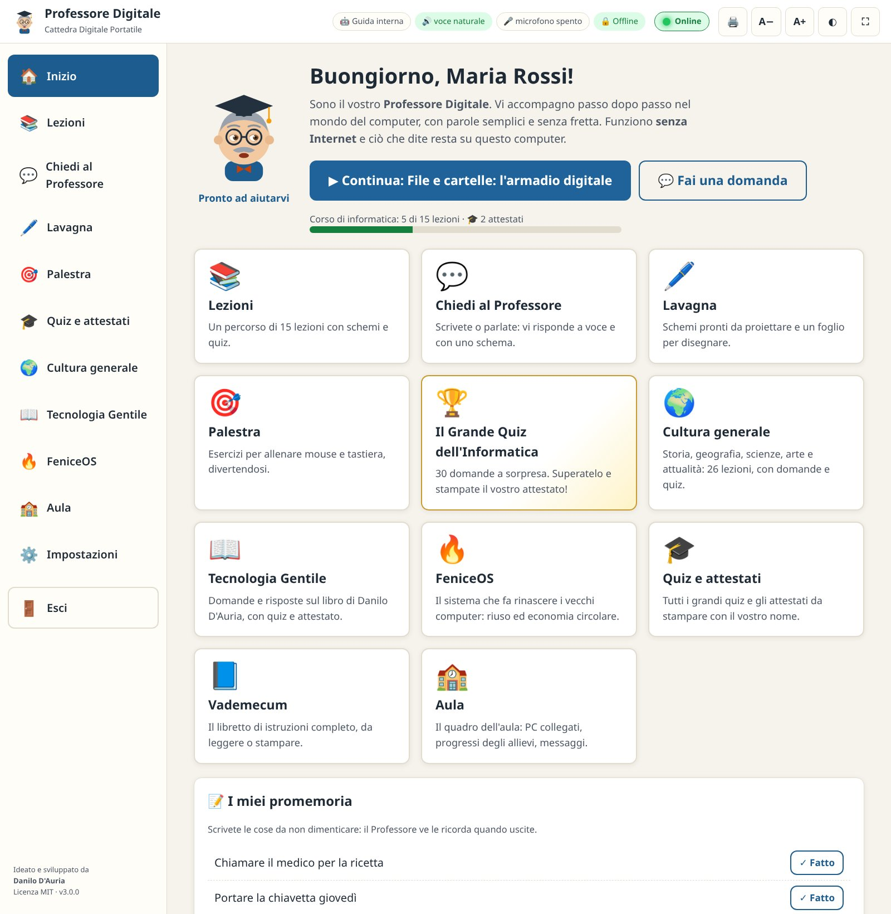
Figura 2. La pagina Inizio per intero: in alto il saluto e la lezione da continuare,
poi i riquadri delle sezioni e, in fondo, i promemoria.
In alto il Professore saluta (buongiorno, buon pomeriggio o buonasera, con il nome dell'allievo se è stato scritto), propone di continuare la lezione
dal punto in cui eravate rimasti e mostra quante lezioni del corso sono completate e quanti attestati avete ottenuto. Sotto, un riquadro per ogni sezione:
Lezioni, Chiedi al Professore, Lavagna, Palestra;
🏆 Il Grande Quiz dell'Informatica: 30 domande a sorpresa e l'attestato (capitolo 9);
🌍 Cultura generale (capitolo 10);
📖 Tecnologia Gentile e 🔥 FeniceOS (capitolo 11);
🎓 Quiz e attestati: tutti i quiz e gli attestati ottenuti;
📘 Vademecum: apre questo libretto;
🏫 Aula: il quadro dell'aula (capitolo 15).
In fondo alla pagina c'è il riquadro 📝 I miei promemoria: le cose da non dimenticare, che il Professore vi ricorda quando uscite (capitolo 12).
La barra in alto
Figura 3. Da sinistra: le pastiglie di stato, l'indicatore Online, il pulsante 🖨️ Stampa,
la grandezza del testo, i colori e la modalità proiettore.
Pastiglia
Significato
🤖 nome del modello / 🤖 Guida interna
Quale «cervello» risponde: l'IA locale oppure la guida interna.
🔊 voce naturale / espeak-ng / pico
Il motore della voce in uso (verde se disponibile).
🎤 vosk / microfono spento
Se le domande a voce sono attive.
🔒 Offline
Promemoria: tutto ciò che fate resta su questo computer.
● Online
Verde quando la connessione a Internet funziona, grigio «Non in linea» quando manca. Il Professore funziona in entrambi i casi (capitolo 12).
Pulsante
Cosa fa
■ Stop voce (rosso)
Compare mentre il Professore parla: lo fa tacere subito. Anche Esc ferma la voce.
🖨️
Stampa la pagina che vedete oppure l'argomento intero (capitolo 12).
A− e A+
Rimpiccioliscono o ingrandiscono tutto il testo.
◐
Cambia i colori: chiaro, scuro, alto contrasto.
⛶
Modalità proiettore: schermo intero, testo grande, menu nascosto.
Il menu a sinistra porta alle sezioni; in fondo, il pulsante 🚪 Esci chiude il Professore salutando e ricordando i promemoria. Su schermi stretti
(tablet, netbook, finestre piccole) il menu si sposta in basso. Il tasto indietro del browser riporta alla pagina precedente.
Il Professore, i suoi stati e i suoi occhi
Il personaggio con il tocco e gli occhiali cambia espressione per far capire cosa sta facendo: un aiuto prezioso per chi è alle prime armi.
I suoi occhi seguono il puntatore del mouse: ogni occhio guarda per conto suo, il movimento è morbido, le palpebre sbattono a intervalli irregolari
e quando nessuno muove il mouse il Professore si guarda un po' intorno. Mentre l'allievo scrive una domanda, il Professore guarda la casella di testo.
Figura 4. Lo sguardo segue il mouse: in alto a sinistra, in basso, a destra.
Stato
Come si riconosce
Pronto ad aiutarvi
Sbatte le palpebre e segue con lo sguardo il mouse.
Vi ascolto…
Onde arancioni vicino all'orecchio e sopracciglia alzate: il microfono è acceso.
Sto pensando…
Nuvolette sopra la testa e sguardo verso l'alto: sta preparando la risposta.
Sto spiegando…
La bocca si muove: sta leggendo ad alta voce.
In attesa…
Occhi socchiusi: nessuno lo usa da un po'. Basta muovere il mouse o premere un tasto per «svegliarlo» (capitolo 12).
Chi preferisce un'immagine ferma può spegnere gli occhi mobili in Impostazioni → Vista. Se nel sistema è attiva la riduzione delle animazioni, gli occhi restano fermi da soli.
§§c5§§
5
CAPITOLO
Le Lezioni
Il cuore della Cattedra è il corso di informatica: 15 lezioni, dal primo contatto con il computer fino ai servizi pubblici digitali,
agli acquisti sicuri e all'intelligenza artificiale. Ogni lezione dura dai 15 ai 25 minuti.
Il catalogo
Lezione
Livello
Min.
Obiettivo
🖥️
Il computer: com'è fatto
Primi passi
15
Conoscere le parti del computer, accenderlo e spegnerlo nel modo giusto.
🖱️
Usare il mouse
Primi passi
20
Clic, doppio clic, clic destro, trascinare.
⌨️
La tastiera senza paura
Primi passi
20
Scrivere, correggere, maiuscole, chiocciola @.
🪟
Il desktop e le finestre
Primi passi
15
Orientarsi sul desktop, ridurre, ingrandire e chiudere finestre.
📁
File e cartelle: l'armadio digitale
Intermedio
20
Salvare, ritrovare, cestino, chiavetta USB.
🌐
Internet e il browser
Intermedio
20
Cos'è Internet, cercare, riconoscere i siti affidabili.
✉️
La posta elettronica
Intermedio
20
Scrivere un'email, allegare una foto, riconoscere lo spam.
📱
Smartphone, messaggi e videochiamate
Intermedio
20
Messaggi, vocali e videochiamate con i propri cari.
🖼️
Foto e ricordi al sicuro
Intermedio
15
Passare le foto dal telefono al computer, ordinarle, farne copie.
🔐
Password e sicurezza
Sicurezza
20
La frase segreta, dove conservarla, la verifica in due passaggi.
🛡️
Riconoscere le truffe online
Sicurezza
25
Phishing, SMS falsi, finti tecnici; cosa fare se si è stati truffati.
🛒
Acquisti e pagamenti online sicuri
Sicurezza
20
Scegliere il negozio, pagare in modo protetto, riconoscere i falsi.
🏛️
Servizi pubblici digitali
Avanzato
25
SPID, CIE, app IO, pagoPA e come riconoscere i falsi.
🤖
L'intelligenza artificiale, spiegata semplice
Avanzato
20
Cosa sa fare l'IA, dove sbaglia, perché l'IA locale tutela la privacy.
🐧
Linux, software libero e riuso
Avanzato
15
Sistema operativo, software libero, economia circolare.
Le lezioni di cultura generale, del libro Tecnologia Gentile e di FeniceOS hanno la stessa forma, ma stanno nelle loro pagine (capitoli 10 e 11)
e non entrano nel conteggio del corso.
Come è fatta una lezione
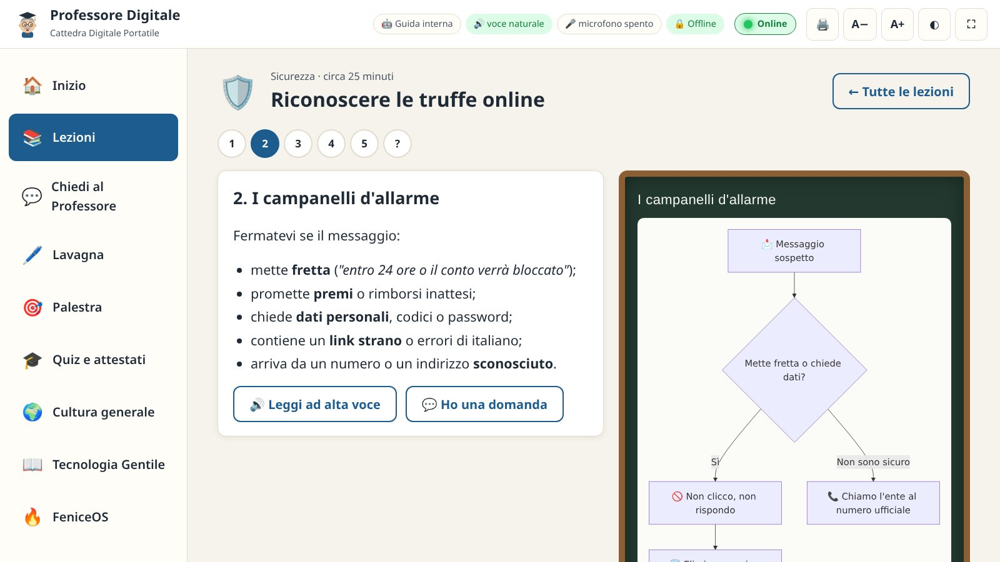
Figura 5. Un passo della lezione sulle truffe: a sinistra il testo, a destra lo schema disegnato sulla lavagna.
I pallini numerati in alto sono i passi; il punto interrogativo è il quiz. I passi già visti diventano verdi. Si può saltare avanti e indietro liberamente.
Il testo è breve e usa metafore della vita quotidiana (l'armadio per le cartelle, la strada per Internet, la chiave per la password). In fondo c'è spesso un 💡 consiglio.
La lavagna a destra mostra lo schema del passo, quando c'è.
🔊 Leggi ad alta voce fa leggere il passo al Professore; 💬 Ho una domanda porta alle domande con l'argomento già scritto.
Avanti → e ← Indietro, grandi e in basso, per chi ha difficoltà con il mouse.
La lezione su cartaDal pulsante 🖨️ in alto scegliete «Stampa la lezione intera»: tutti i passi, gli schemi
e il quiz con le soluzioni in fondo, pronti da distribuire al gruppo (capitolo 12).
Il quiz finale
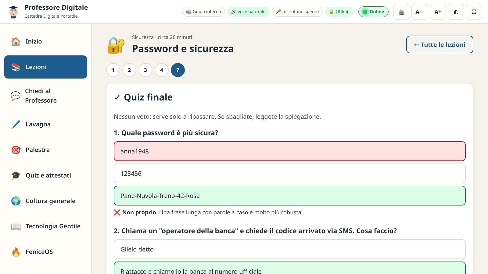
Figura 6. Il quiz: ogni risposta viene spiegata subito.
Il quiz non dà voti: serve a ripassare. Dopo ogni risposta il Professore dice se è giusta e spiega il perché, a voce e per iscritto.
La risposta corretta viene sempre evidenziata in verde.
Quando tutte le domande hanno una risposta, la lezione risulta completata e compaiono due pulsanti: la lezione successiva e, dove previsto,
l'esercizio collegato in Palestra. I progressi (passi visti, lezioni completate, punteggi) vengono salvati da soli.
Per mettersi alla prova sul corso intero c'è Il Quiz del Corso di Informatica, con attestato (capitolo 9).
§§c6§§
6
CAPITOLO
Chiedi al Professore
Qui si fanno le domande, con le proprie parole: «come si scrive la chiocciola?», «il programma non risponde», «mi è comparso un messaggio
che dice che il mio conto è bloccato». Il Professore risponde per iscritto, a voce e, quando serve, con uno schema sulla lavagna.
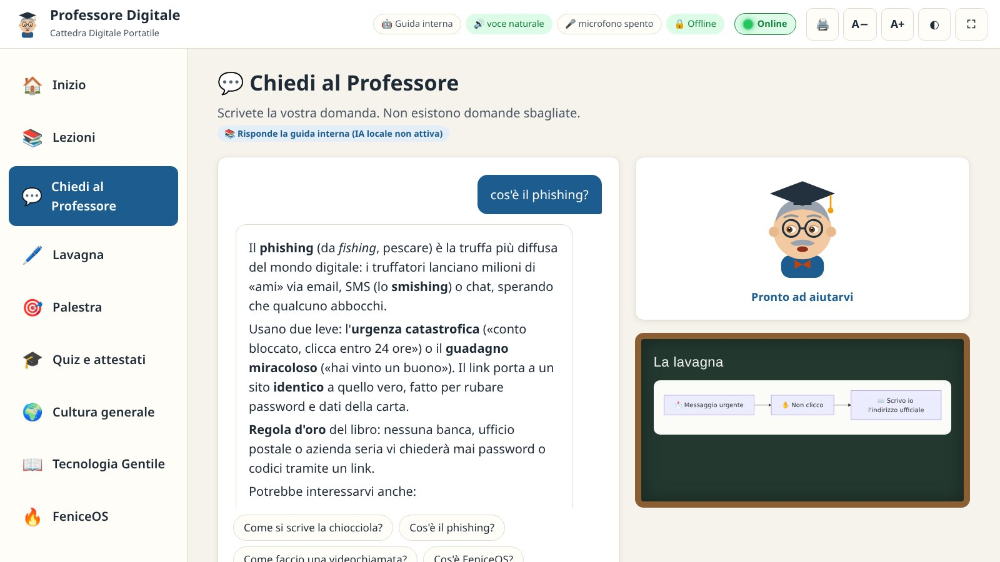
Figura 7. Una risposta della guida interna sul phishing, con lo schema sulla lavagna e i suggerimenti collegati.
Fare una domanda
Scrivendo: scrivete nel riquadro e premete Invia oppure Invio. Per andare a capo senza inviare: Maiusc + Invio.
Con i suggerimenti: i pulsanti tondi sopra il riquadro sono domande pronte, utili per rompere il ghiaccio.
A voce: premete il microfono arancione 🎤 e parlate. Quando smettete di parlare, dopo un paio di secondi il Professore capisce che avete finito
(potete anche premere di nuovo il pulsante, diventato ■). La prima volta il browser chiede il permesso di usare il microfono: scegliete Consenti.
Il microfono si attiva con la configurazione del capitolo 14.
Chi risponde: guida interna o IA
📚 Guida interna
🤖 IA locale
Sempre disponibile
Sì, anche nella versione portatile
Solo se configurata (capitolo 14)
Cosa sa
73 risposte verificate, il testo delle lezioni e le domande di cultura generale, del libro e di FeniceOS
Risponde a domande libere, formulate in molti modi
Affidabilità
Contenuti scritti e controllati
Buona, ma può sbagliare: va verificata sui temi importanti
Velocità
Istantanea
Da pochi secondi a un minuto, secondo il computer e il modello
Quando l'IA è attiva, il Professore le passa anche le informazioni pertinenti della guida interna: così anche i modelli più piccoli danno risposte più precise.
Se l'IA non risponde o dà errore, la risposta arriva comunque dalla guida interna, con una nota che lo segnala. Se la guida non trova una risposta adatta,
lo dice apertamente e propone gli argomenti più vicini: meglio un «non lo so» onesto che una risposta sbagliata.
I pulsanti sotto le risposte
🔊 Riascolta
Fa rileggere la risposta.
📊 Schema
Riporta sulla lavagna lo schema di quella risposta.
📚 Apri la lezione
Porta al passo della lezione da cui proviene la risposta.
■ Ferma la risposta
Interrompe l'IA mentre scrive (utile se la risposta è troppo lunga).
🧹 Nuova conversazione
Cancella la conversazione e ricomincia (ad esempio quando cambia l'allievo).
Con 🖨️ → Stampa tutta la conversazione le domande e le risposte della giornata finiscono su carta, da portare a casa.
Con l'IA, buon sensoInsegnate agli allievi a verificare con una fonte ufficiale o con una persona di fiducia
le informazioni su salute, soldi, leggi e scadenze. Il Professore stesso lo ricorda nella lezione sull'intelligenza artificiale.
§§c7§§
7
CAPITOLO
La Lavagna
La lavagna ha due facce: gli schemi pronti, da proiettare mentre si spiega, e il disegno libero, per tracciare a mano frecce, cerchi e parole.
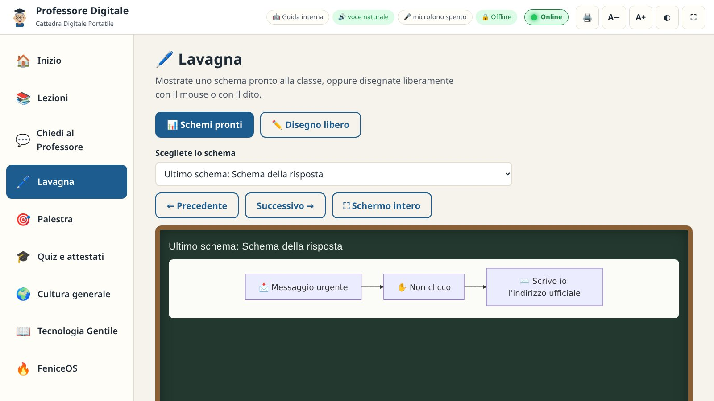
Figura 8. Gli schemi pronti: si sceglie dall'elenco o si scorre con Precedente e Successivo.
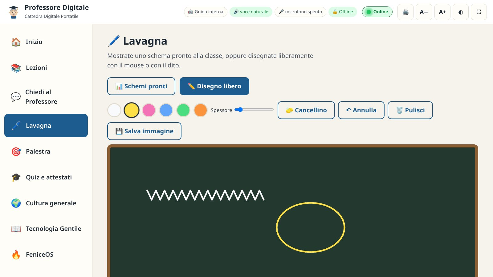
Figura 9. Il disegno libero: gessetti colorati, spessore, cancellino, annulla, pulisci e salva.
Schemi pronti
L'elenco raccoglie gli schemi delle lezioni e della guida e, in cima, l'ultimo schema disegnato in una risposta. ⛶ Schermo intero ingrandisce
la lavagna per il proiettore. Sulle lavagne strette gli schemi orizzontali lunghi vengono ridisposti in verticale da soli, per restare leggibili.
Disegno libero
Gessetti: sei colori (bianco, giallo, rosa, azzurro, verde, arancio). Funziona con il mouse, con il dito sugli schermi touch e con le penne.
Spessore: il cursore regola la grandezza del tratto.
🧽 Cancellino, ↶ Annulla (fino a 20 passi indietro) e 🗑️ Pulisci.
💾 Salva immagine: scarica il disegno come immagine PNG nella cartella Scaricati, per stamparlo o mandarlo al gruppo.
Il disegno resta sulla lavagna anche se passate a un'altra sezione e poi tornate.
§§c8§§
8
CAPITOLO
La Palestra
Mouse e tastiera si imparano con le mani, non con gli occhi. La Palestra propone undici esercizi brevi e giocosi, in cui non si può
sbagliare: si può solo migliorare. Ogni esercizio ricorda il vostro record personale.
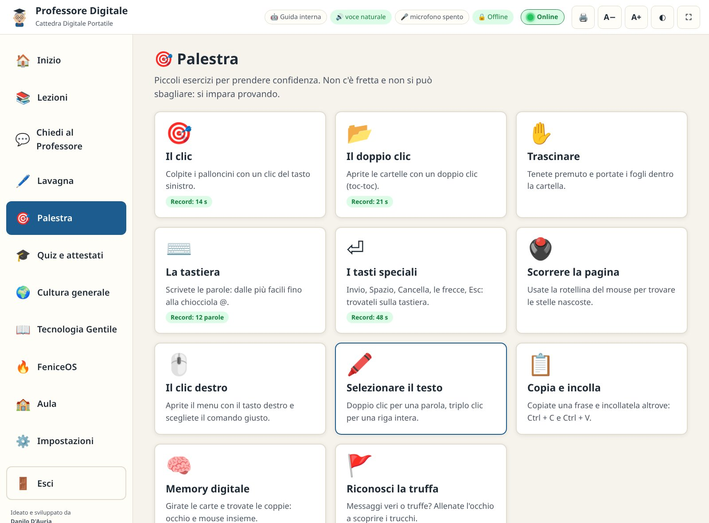
Figura 10. Gli undici esercizi della Palestra, con i record già ottenuti.
Esercizio
Cosa si allena
Come funziona
🎯
Il clic
Mira e clic sinistro
Compaiono 10 palloncini, uno alla volta, in punti diversi; diventano più piccoli man mano. Record: il tempo più breve.
📂
Il doppio clic
Selezionare e aprire
Cinque cartelle: un clic le seleziona, due clic rapidi («toc-toc») le aprono. Insegna la differenza tra i due gesti.
✋
Trascinare
Tenere premuto e spostare
Cinque fogli da portare nella cartella in basso a destra, come nel gestore dei file.
⌨️
La tastiera
Scrivere e correggere
Dodici parole di difficoltà crescente, da «casa» fino a «mario@esempio.it», con suggerimenti su Maiusc, spazio, Alt Gr e trattino.
⏎
I tasti speciali
Trovare i tasti importanti
Dieci tasti da trovare e premere: Invio, Spazio, Cancella, Maiuscolo, Esc, le frecce, Tab, Canc e la chiocciola. Per ognuno, dove si trova e a cosa serve.
🖲️
Scorrere la pagina
La rotellina del mouse
Una pagina lunga piena di disegni: girando la rotellina si cercano le cinque stelle ⭐ nascoste e si fa clic su ciascuna.
🖱️
Il clic destro
Il menu del tasto destro
Cinque prove: clic destro sul file indicato («Lettera», «Foto del mare»…) e scelta del comando giusto (Apri, Copia, Rinomina).
🖍️
Selezionare il testo
Doppio e triplo clic
Doppio clic per selezionare una parola, triplo clic per tutta la frase.
📋
Copia e incolla
Ctrl + C e Ctrl + V
Quattro frasi (un saluto, un indirizzo email, un indirizzo di casa, un appuntamento) da copiare e incollare, con la tastiera o con il clic destro.
🧠
Memory digitale
Occhio e mouse insieme
Dodici carte coperte con i simboli del digitale: si girano due alla volta per trovare le sei coppie.
🚩
Riconosci la truffa
Prudenza
Dieci messaggi (SMS, email, WhatsApp, telefonate): per ognuno si sceglie «È una truffa» o «È affidabile» e il Professore spiega i segnali da notare.
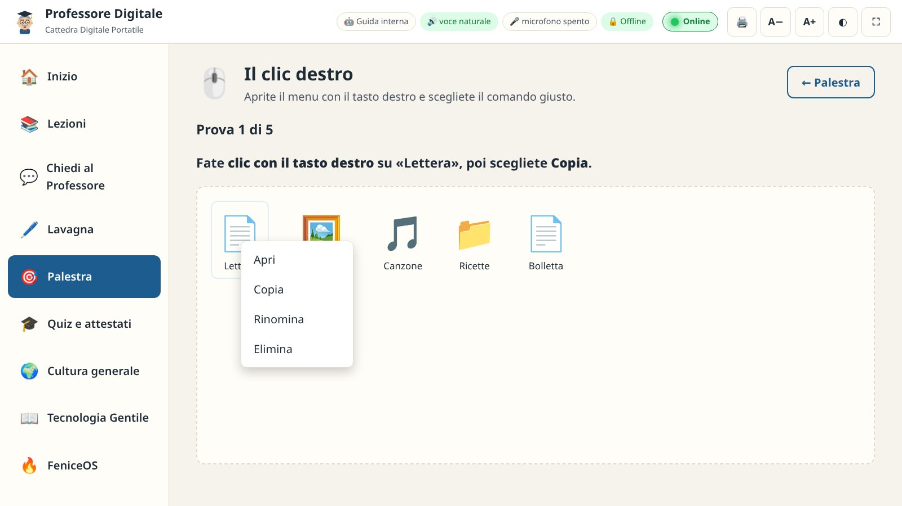
Figura 11. Il clic destro: il menu si apre accanto al file, come nel gestore dei file.Figura 12. Riconosci la truffa: minaccia, scadenza e richiesta della carta sono i tre segnali del phishing.
Consiglio per il facilitatoreFate fare l'esercizio del clic all'inizio di ogni incontro, come «riscaldamento».
Vedere il proprio tempo migliorare di settimana in settimana è un grande incoraggiamento. «Riconosci la truffa» funziona benissimo proiettato:
il gruppo vota a voce e poi si legge la spiegazione. Sui portatili, all'inizio, collegate un mouse con il filo: il touchpad è più difficile.
§§c9§§
9
CAPITOLO
Quiz e attestati
Dopo le lezioni, la prova: i grandi quiz mettono alla prova con calma, senza fretta e senza voti di scuola. Chi risponde bene ad almeno
il 70% delle domande riceve un attestato con il proprio nome, da stampare o salvare in PDF.
Figura 13. La pagina Quiz e attestati: un riquadro per ogni grande quiz, con il miglior risultato ottenuto.
Più in basso, l'elenco degli attestati.
I grandi quiz
Quiz
Domande per tentativo
Da dove vengono
🏆
Il Grande Quiz dell'Informatica
30 su 264
Il manuale di Danilo D'Auria: storia, hardware, sistemi operativi, software, Internet, comunicazione, sicurezza, cloud, intelligenza artificiale, economia circolare, FeniceOS e Linux, dal livello Base all'Esperto.
🖥️
Il Quiz del Corso di Informatica
20 su 148
Ciò che si è imparato nelle lezioni del corso: mouse e tastiera, file, Internet, posta, password, truffe, smartphone, servizi pubblici, IA, Linux e Windows.
🏛️
Storia · Geografia · Scienze · Arte · Cittadinanza e Attualità
20 per ciascuno, su 80–90
Le materie della Cultura generale (capitolo 10).
♻️
Il Grande Quiz di FeniceOS e del Riuso
20 su 141
FeniceOS, Linux, recupero dei computer ed economia circolare.
🌿
Il Quiz di Tecnologia Gentile
20 su 82
Il libro di Danilo D'Auria (capitolo 11).
Come si svolge
Scegliete un quiz. Nella prima pagina il Professore spiega le regole e chiede nome e cognome: è il nome che comparirà sull'attestato
(si può scrivere una volta sola in Impostazioni → Vista, «Nome dell'allievo»).
Premete ▶ Inizia il quiz. Le domande arrivano una alla volta, scelte a caso e mescolate tra gli argomenti: ogni tentativo è diverso,
e anche l'ordine delle risposte cambia.
Fate clic sulla risposta. Subito compare se è giusta (in verde) o no (in rosso, con quella giusta in verde) e una breve spiegazione.
🔊 Leggi la domanda fa leggere domanda e risposte al Professore. Poi Avanti →.
Alla fine vedete quante risposte giuste avete dato. Con almeno il 70% il quiz è superato e compare 🎓 Il vostro attestato;
altrimenti il Professore incoraggia a ripassare e riprovare.
Sotto il risultato, il riquadro 📝 Da ripassare elenca le domande sbagliate con la risposta giusta e la spiegazione.
Figura 14. Una domanda del Grande Quiz dell'Informatica: la risposta scelta era sbagliata,
il Professore mostra quella giusta e la spiega.
Si può riprovare tutte le volte che si vuole: il Professore ricorda il miglior risultato e il numero di tentativi. ✕ Interrompi torna all'elenco senza salvare il tentativo.
L'attestato
Figura 15. L'attestato di Maria Rossi per il Grande Quiz dell'Informatica: nome, quiz superato,
punteggio e giudizio, data, codice e firma del facilitatore.
Contiene il nome dell'allievo, il titolo del quiz e l'ambito, le risposte esatte con la percentuale, un giudizio
(Sufficiente, Buono dal 75%, Ottimo dall'85%, Eccellente dal 95%), la data, un codice che lo identifica e lo spazio per la firma.
Il nome del facilitatore o del corso, se scritto in Impostazioni → Vista, compare già al posto della firma.
Il nome si può correggere nella casella Nome sull'attestato sopra il disegno (per esempio per aggiungere il secondo nome).
🖨️ Stampa lo prepara su un foglio A4 orizzontale. 📄 Salva in PDF crea il file Attestato - Nome - Titolo.pdf nella cartella
Scaricati, da conservare, mandare per email o stampare altrove. Tutto avviene sul computer, senza Internet.
Gli attestati ottenuti restano nell'elenco 🏅 I vostri attestati, in fondo alla pagina Quiz e attestati, con il pulsante Apri e stampa.
Una piccola cerimoniaConsegnare l'attestato stampato davanti al gruppo, magari a fine corso, vale moltissimo:
per molti allievi è il primo «diploma» digitale. Usate carta un po' più spessa e, se potete, una cartellina.
§§c10§§
10
CAPITOLO
Cultura generale
Il computer è anche una finestra sul mondo. In 🌍 Cultura generale trovate lezioni brevi di storia, geografia, scienze, arte e attualità,
con schemi alla lavagna, domande e risposte da consultare e un grande quiz per ogni materia: un modo piacevole per esercitarsi con il computer imparando altro.
Figura 16. Le cinque materie, con il numero di lezioni e di domande e la barra dei progressi.
Quando il quiz di una materia è superato compare «🎓 Attestato ottenuto».
Materia
Lezioni
Domande e risposte
🏛️
Storia
Preistoria e prime civiltà · Grecia antica e Roma · Il Medioevo · Rinascimento, scoperte ed età moderna · Il Risorgimento e l'Unità d'Italia · Il Novecento: guerre, Repubblica ed Europa
30
🌍
Geografia
La Terra: forma, movimenti e stagioni · L'Italia fisica · L'Italia delle regioni e dei capoluoghi · L'Europa e i suoi Paesi · Leggere una mappa e orientarsi
30
🔬
Scienze
Il corpo umano e la salute · Il sistema solare e lo spazio · Materia, energia ed elettricità in casa · La natura, gli ecosistemi e la biodiversità · Il clima e l'ambiente
30
🎨
Arte
L'arte antica: Grecia e Roma · L'arte medievale e Giotto · Il Rinascimento: Leonardo, Michelangelo, Raffaello · Dal Barocco all'Impressionismo · Arte moderna, musei e patrimonio UNESCO
25
📰
Attualità e cittadinanza
La Costituzione italiana e i suoi principi · Come funziona lo Stato · L'Unione europea e le organizzazioni internazionali · Informarsi bene e riconoscere le notizie false · Sostenibilità e futuro
30
La pagina di una materia
Facendo clic su una materia si apre la sua pagina, divisa in tre parti:
📚 Lezioni: si svolgono come quelle del corso (capitolo 5), con passi, schemi, lettura ad alta voce e quiz finale.
Il Grande Quiz della materia: 20 domande a sorpresa, con attestato (capitolo 9).
❓ Domande e risposte: un elenco da consultare. Scrivete una parola nella casella di ricerca (per esempio «Garibaldi», «Alpi», «Leonardo»)
e restano solo le domande che la contengono; fate clic su una domanda per aprire la risposta, con lo schema quando c'è, 🔊 Leggi e 📚 Apri la lezione.
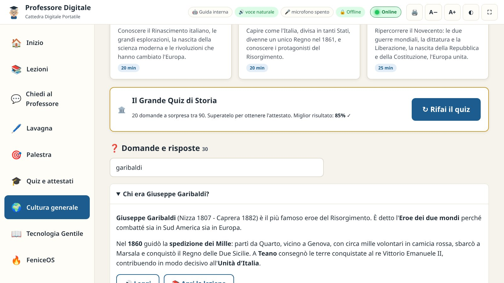
Figura 17. Storia: il quiz della materia, già superato, e la ricerca tra le domande con la parola «garibaldi».
Le stesse domande sono note anche a Chiedi al Professore: «chi era Garibaldi?» riceve la risposta anche dalla guida interna.
Con 🖨️ → Stampa lezioni e domande dell'argomento si ottiene un fascicolo con l'elenco delle lezioni e tutte le domande e risposte della materia.
§§c11§§
11
CAPITOLO
Tecnologia Gentile e FeniceOS
Il Professore Digitale fa parte di un progetto più ampio di Danilo D'Auria: un libro che spiega l'idea di Tecnologia Gentile e un sistema
operativo, FeniceOS, che la mette in pratica sui computer da recuperare. Ciascuno ha la sua pagina, nel menu a sinistra.
📖 Tecnologia Gentile · il libro
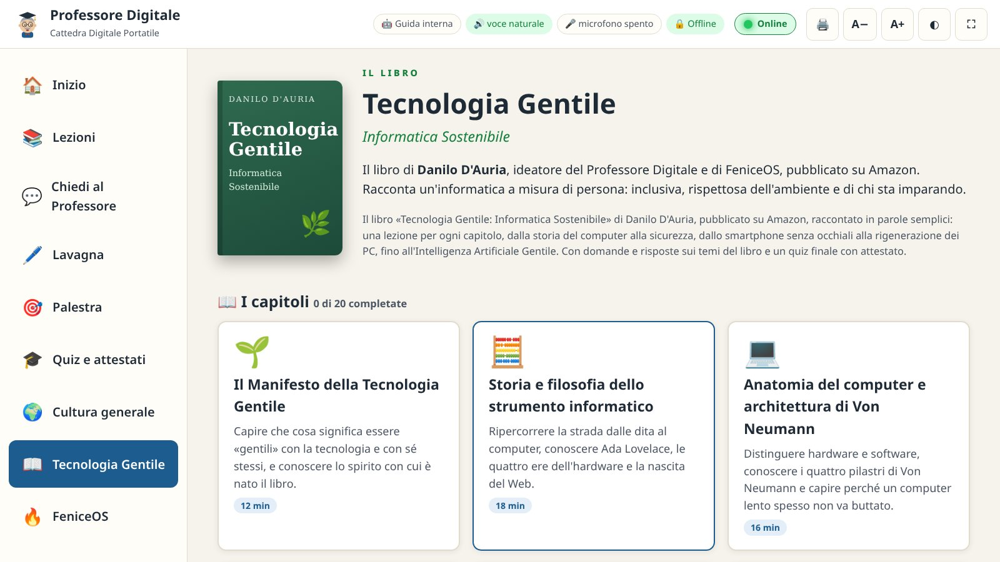
Figura 18. La pagina del libro: la copertina, la presentazione e i capitoli raccontati come lezioni.
Tecnologia Gentile: Informatica Sostenibile è il libro di Danilo D'Auria, pubblicato su Amazon. Racconta un'informatica a misura di persona:
inclusiva, rispettosa dell'ambiente e di chi sta imparando. Nella pagina trovate:
📖 I capitoli: 20 lezioni brevi, una per capitolo, dal Manifesto della Tecnologia Gentile alla storia del computer, dalla sicurezza allo
«smartphone senza occhiali», dai «Nipoti Digitali» alla rigenerazione dei PC, fino all'Intelligenza Artificiale Gentile.
Il Quiz di Tecnologia Gentile: 20 domande su 82, con attestato.
❓ Domande e risposte sul libro: 67 domande con la ricerca per parola.
🔥 FeniceOS · il sistema operativo della rinascita digitale
Figura 19. La pagina di FeniceOS: il motto «Un computer che funziona non è un rifiuto», la presentazione e i numeri principali.
FeniceOS è una distribuzione Linux live, basata su Debian 12 «Bookworm», ideata e sviluppata da Danilo D'Auria. Si avvia da una chiavetta USB e fa
rinascere i computer che il mercato considera obsoleti, trasformandoli in postazioni per centri anziani, aule, centri per il sociale e biblioteche.
Il Professore Digitale funziona benissimo su FeniceOS: si installa con lo stesso pacchetto .deb (capitolo 3).
La pagina contiene:
I numeri
Versione 1.0.0 «Ashborn», base Debian 12, obiettivo di meno di 500 MB di RAM, un'unica immagine per BIOS e UEFI, due utenti (fenice per il facilitatore, ospite per gli allievi), zero telemetria.
Undici sezioni
Perché «Fenice», la filosofia della Tecnologia Gentile, economia circolare, obsolescenza programmata, cosa c'è dentro, come nasce l'immagine ISO, i due utenti, per chi è pensata, FeniceOS e Professore Digitale, privacy e sicurezza, come contribuire. Si raggiungono con l'indice in alto.
💾 Provare FeniceOS dalla chiavetta
Nove passi, dal file ISO con la sua impronta alla scrittura della chiavetta (Rufus in modalità «DD Image» o balenaEtcher), dal menu di avvio (F12, F2, Esc o Canc) alle voci Safe Graphics e Zero-Disk, fino all'accesso come ospite o fenice.
🖥️ Di cosa ha bisogno
Processore a 64 bit, memoria, avvio da USB, rete, stampanti, Internet, disco.
📜 Il manifesto
I dieci principi della tecnologia gentile.
Lezioni, quiz e domande
12 lezioni sul riuso, il Grande Quiz di FeniceOS e del Riuso (20 domande su 141, con attestato), 63 domande e risposte e 15 domande frequenti.
Prima di provare FeniceOSScrivere FeniceOS su una chiavetta la cancella del tutto, e installarlo sul disco
cancella il disco scelto. In modalità live, invece, il disco del computer non viene toccato. Fatevi sempre aiutare dal facilitatore e fate prima una copia dei vostri file.
§§c12§§
12
CAPITOLO
Voci, saluti, promemoria, stampa e «Online»
Dalla versione 3.0 il Professore è più «presente»: parla con una voce maschile o femminile a scelta, vi accoglie quando aprite il programma,
vi dà un consiglio se restate fermi, ricorda le vostre cose da fare e vi saluta quando uscite. Tutto si può spegnere in Impostazioni → Voce.
Le voci italiane, maschili e femminili
Figura 20.Impostazioni → Voce → «Voce del Professore»: 👨 voci maschili e 👩 voci femminili.
(L'elenco qui è aperto per intero; nel programma si apre con un clic.)
Nel pacchetto sono già incluse due voci naturali italiane, che funzionano senza Internet:
👨 Riccardo, voce maschile: è la voce predefinita, perché il Professore è un uomo;
👩 Paola, voce femminile, morbida e chiara.
Funzionano sui PC a 64 bit (x86_64) e sulle schede ARM a 64 bit con un sistema recente (Debian 11, Ubuntu 20.04, Mint 20 e successive, FeniceOS).
Nello stesso elenco ci sono anche quattro voci leggere (espeak-ng): maschile, maschile grave, femminile e femminile morbida,
che funzionano su tutti i computer, anche a 32 bit e molto vecchi.
Per cambiare voce: Impostazioni → Voce → Voce del Professore. Appena scelta, il Professore dice «Buongiorno! Questa è la mia nuova voce.».
Con Automatica (consigliata) usa Riccardo, poi Paola, poi la voce leggera maschile. Sotto l'elenco si legge quante voci maschili e femminili ci sono sul computer.
Il saluto all'avvio
Figura 21. Il saluto della mattina, con la lezione da continuare e i promemoria.Figura 22. Dopo qualche minuto senza attività, un consiglio.
Quando aprite il programma, il Professore compare in una nuvoletta in basso a destra e saluta a voce secondo l'ora del computer:
«Buongiorno» fino alle 13, «Buon pomeriggio» fino alle 18, poi «Buonasera», con il nome dell'allievo se è stato scritto.
Propone la lezione da continuare (▶ Continua la lezione oppure Più tardi) e dice quanti promemoria avete. Se è molto tardi (dopo le 22)
consiglia qualcosa di breve, e poi a riposare. Il saluto si fa una volta sola per finestra.
Su alcuni computer il browser permette di parlare solo dopo il primo clic: in quel caso il Professore saluta a voce appena toccate il mouse o la tastiera.
I consigli e l'attesa
Se nessuno usa il programma per qualche minuto (circa 3), il Professore propone un consiglio: continuare la lezione, provare il Grande Quiz,
allenarsi in Palestra, scoprire la Cultura generale o FeniceOS, fare una domanda, alzarsi a sgranchire le gambe. Dopo altri minuti ne propone un secondo,
diverso dal primo. I pulsanti della nuvoletta portano direttamente dove serve; No, grazie la chiude.
Dopo circa 10 minuti di silenzio dice «Mi metto in attesa» e socchiude gli occhi: In attesa… muovete il mouse per svegliarmi.
Appena muovete il mouse o premete un tasto vi accoglie con «Bentornati!». Il Professore non interrompe mai mentre parla, mentre ascolta,
durante un esercizio della Palestra o una stampa.
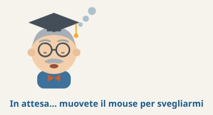
Figura 23. Il Professore in attesa, con gli occhi socchiusi.
I promemoria
Figura 24. I promemoria in fondo alla pagina Inizio.
In fondo alla pagina Inizio, nel riquadro 📝 I miei promemoria, scrivete le cose da non dimenticare («Chiamare il medico per la ricetta»,
«Portare la chiavetta giovedì») e premete ➕ Aggiungi. Quando una cosa è fatta, premete ✓ Fatto e sparisce. Il Professore ricorda quanti promemoria
ci sono quando saluta, ne cita uno tra i consigli e li legge tutti quando uscite.
Il pulsante 🚪 Esci
Figura 25. L'uscita di sera: i promemoria, la prossima lezione, il consiglio di spegnere bene il computer e la buona notte.
In fondo al menu a sinistra, 🚪 Esci apre una finestra di congedo: il Professore elenca i promemoria, ricorda la prossima lezione,
consiglia di salvare il lavoro e spegnere il computer dal menu e saluta secondo l'ora («buona giornata», «buon pomeriggio», «buona serata» oppure,
se è tardi, «Buona notte, e sogni d'oro!»). Con la voce attiva legge tutto e poi chiude il programma da solo; altrimenti premete 🚪 Esci adesso.
↩ Resto ancora annulla. Alla fine compare «Il Professore si è chiuso. Ora potete chiudere questa finestra».
Il pulsante 🖨️ Stampa
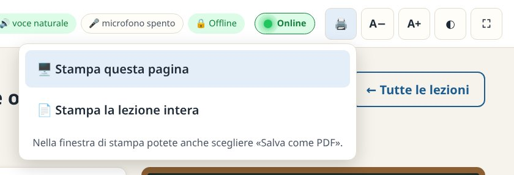
Figura 26. Il menu di stampa durante una lezione.
Il pulsante 🖨️ nella barra in alto apre un piccolo menu con due scelte:
🖥️ Stampa questa pagina: ciò che vedete, senza menu e pulsanti.
📄 Stampa l'argomento, quando la pagina ne ha uno: la lezione intera con tutti i passi, gli schemi e il quiz (soluzioni in fondo);
tutta la conversazione in Chiedi al Professore; lezioni e domande di una materia di cultura, del libro o di FeniceOS; l'attestato.
Scorciatoia: Ctrl + Maiusc + P stampa subito l'argomento. Nella finestra di stampa potete anche scegliere «Salva come PDF».
L'indicatore «Online»
Accanto alle pastiglie in alto, ● Online si illumina di verde quando la connessione a Internet funziona davvero, ed è grigio con la scritta
«Non in linea» quando manca: utile per capire in un attimo se si può navigare o se il router ha un problema. Il Professore funziona benissimo in entrambi i casi.
Fate clic sull'indicatore per controllare subito.
Per saperlo, il programma prova al massimo una volta al minuto ad aprire e chiudere una connessione verso un server pubblico neutrale
(come 1.1.1.1 o 9.9.9.9): nessun dato viene inviato. Chi preferisce che il computer resti del tutto silenzioso può spegnerlo in
Impostazioni → Vista: l'indicatore diventa «Online: non controllato».
Cosa spegnere
Dove
Saluto a voce all'avvio
Impostazioni → Voce → «Il Professore saluta a voce all'avvio»
Promemoria e saluto all'uscita
Impostazioni → Voce → «All'uscita ricorda i promemoria e saluta»
Consigli e attesa
Impostazioni → Voce → «Quando nessuno lo usa per un po', il Professore dà qualche consiglio…»
Indicatore «Online»
Impostazioni → Vista → «Indicatore «Online»»
§§c13§§
13
CAPITOLO
Impostazioni e accessibilità
Ogni gruppo è diverso. Le impostazioni adattano la Cattedra alla vista, all'udito e al ritmo di chi la usa. Le scelte vengono salvate
e ritrovate al prossimo avvio.
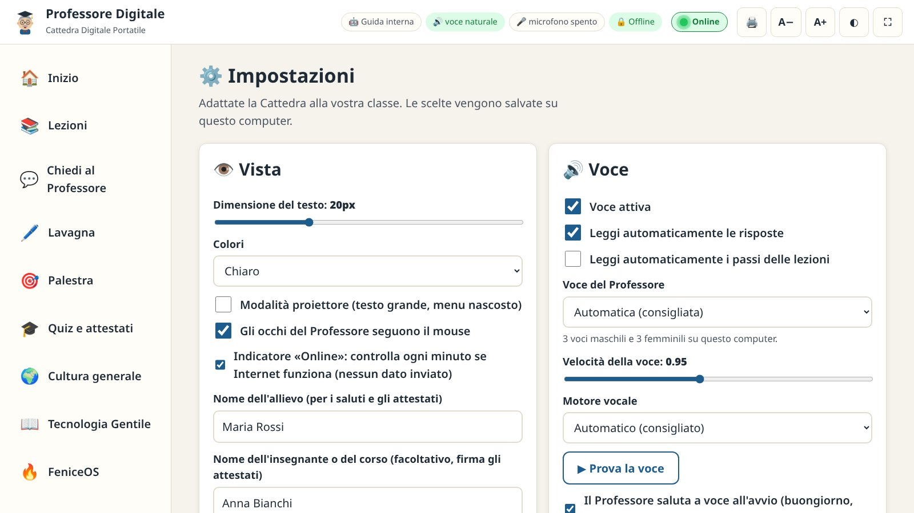
Figura 27. La pagina delle impostazioni, divisa in riquadri: Vista, Voce, Intelligenza artificiale, Microfono, Dati, Contenuti, Aggiornamenti, Diagnostica, Informazioni.
👁️ Vista
Dimensione del testo da 14 a 34 punti (anche con A− / A+ in alto).
Colori: chiaro, scuro (riposante la sera o nelle stanze buie), alto contrasto giallo su nero per chi vede poco.
Modalità proiettore: testo grande e menu nascosto.
Gli occhi del Professore seguono il mouse: attivo di serie; spegnetelo se distrae.
Indicatore «Online»: attivo di serie; spegnetelo se non volete nessun controllo della connessione (capitolo 12).
Nome dell'allievo: per i saluti e gli attestati. Nome dell'insegnante o del corso (facoltativo): firma gli attestati e viene comunicato all'IA.
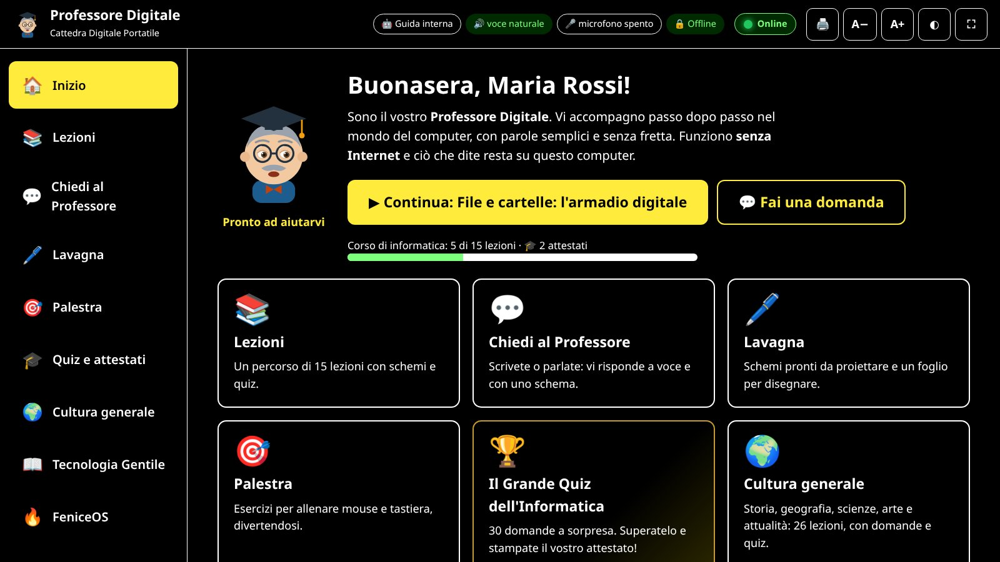
Figura 28. Colori ad alto contrasto.
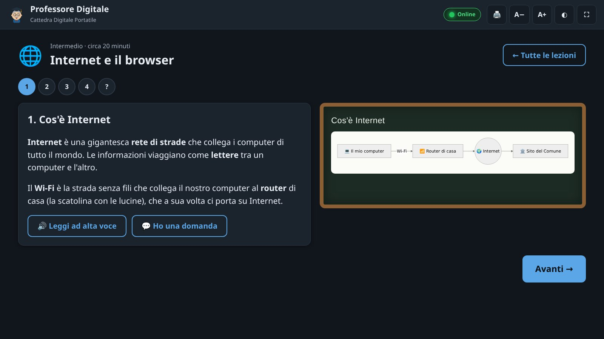
Figura 29. Modalità proiettore con colori scuri.
🔊 Voce
Voce attiva: l'interruttore generale. Leggi automaticamente le risposte (attivo di serie) e i passi delle lezioni (spento di serie).
Voce del Professore: Riccardo, Paola o una voce leggera, maschile o femminile (capitolo 12).
Velocità da 0,60 a 1,40. Per le persone anziane si consiglia tra 0,85 e 0,95.
Motore vocale: «Automatico» usa le voci del computer e, in mancanza, la voce del browser. ▶ Prova la voce controlla volume e velocità.
Saluto all'avvio, promemoria e saluto all'uscita, consigli e attesa: tre interruttori, tutti attivi di serie.
🤖 Intelligenza artificiale e 🎤 microfono
Mostrano se l'IA (Ollama) e il riconoscimento vocale sono attivi, quali modelli sono installati e quale è consigliato per la memoria di questo computer,
e permettono di scegliere il modello. Se qualcosa manca, indicano il comando da dare nel terminale (capitolo 14). Si può spegnere l'IA (per usare solo la guida interna) e decidere se inviare subito la domanda
dopo aver parlato. 🔄 Ricontrolla i componenti aggiorna lo stato dopo un'installazione.
📦 Dati e progressi
Esporta progressi salva un file professore-digitale-progressi.json nella cartella Scaricati, con lezioni, risultati dei quiz, attestati,
record della Palestra e promemoria; Importa lo ricarica (anche su un altro computer, anche Windows); Azzera progressi ricomincia il percorso e chiede
una seconda conferma. La cartella dei progressi è indicata nel riquadro stesso (capitolo 17).
🧩 Contenuti aggiuntivi, 🔄 Aggiornamenti e 🩺 Diagnostica
Si possono importare pacchetti di domande, lezioni e quiz (file .json) senza reinstallare: l'elenco mostra anche i pacchetti già inclusi
(cultura, libro, FeniceOS, Grande Quiz). Il controllo degli aggiornamenti parte solo premendo il pulsante: se c'è una versione nuova il Professore la scarica
nella cartella Scaricati, ne verifica l'impronta e mostra il comando per installarla (capitolo 18). La Diagnostica riassume lo stato del sistema: utile da copiare quando si chiede aiuto.
§§c14§§
14
CAPITOLO
IA, microfono e voci: i componenti facoltativi
Il programma di base è completo e ha già le voci. Due componenti possono arricchirlo: l'intelligenza artificiale locale e il microfono.
Ognuno richiede Internet una sola volta, durante la configurazione; poi funziona offline.
Si configurano dal menu delle applicazioni (Professore Digitale: configura IA e Professore Digitale: configura microfono) oppure dal terminale.
Le procedure sono guidate, in italiano, e chiedono conferma prima di ogni passo importante. Dopo l'installazione di un componente, nel Professore premete
Impostazioni → 🔄 Ricontrolla i componenti (oppure riavviatelo).
L'intelligenza artificiale locale
professore-digitale-setup-ia
Controlla memoria, processore e architettura (serve un sistema a 64 bit).
Se manca, installa Ollama dal sito ufficiale (chiede la password di amministratore).
Avvia il servizio e propone il modello più adatto alla memoria del computer.
Scarica il modello e fa una prova in italiano.
Modello
Dimensione
Adatto a
qwen2.5:0.5b
~0,4 GB
PC molto datati, meno di 3–4 GB di RAM: risposte semplici
qwen3.5:0.8b
~1 GB
PC datati, 4–5 GB di RAM
qwen3.5:2b
~2,7 GB
PC con 6–8 GB di RAM
qwen3.5:4b
~3,4 GB
PC con 8–16 GB di RAM (scelta tipica)
gemma3:4b
~3,3 GB
Alternativa con ottimo italiano
qwen3.5:9b
~6,6 GB
PC recenti, 16 GB di RAM o scheda video
gemma4:12b
~8 GB
PC potenti, 24 GB di RAM o scheda video da 12 GB
Per scegliere direttamente un modello: professore-digitale-setup-ia --modello qwen3.5:4b. Si possono installare più modelli e scegliere quello da usare
in Impostazioni → Intelligenza artificiale → Modello.
Regola praticaMeglio un modello piccolo che risponde in 10 secondi di uno grande che fa aspettare un minuto:
davanti a un gruppo, l'attenzione vale più della raffinatezza.
Il microfono (riconoscimento vocale offline)
professore-digitale-setup-voce
Installa nella cartella dell'utente, senza password, il motore Vosk e il modello della lingua italiana (circa 50 MB).
Le voci
Le voci naturali Riccardo (uomo) e Paola (donna) sono già nel pacchetto, insieme al motore Piper per PC a 64 bit (x86_64) e ARM a 64 bit (aarch64):
non serve installare nulla. Funzionano sui sistemi recenti (Debian 11 e successive, Ubuntu 20.04 e successive, Mint 20 e successive, FeniceOS); se il sistema è troppo vecchio
il Professore usa le voci leggere di espeak-ng, maschili e femminili. Si scelgono in Impostazioni → Voce → «Voce del Professore» (capitolo 12).
Il comando professore-digitale-setup-voce --voce-naturale scarica di nuovo Piper con Paola e Riccardo nella cartella personale: serve solo in casi particolari,
per esempio per riaverle dopo averle tolte con --rimuovi.
Aule senza Internet
Per i computer che non si collegheranno mai alla rete, preparate tutto su un PC connesso e portatelo con una chiavetta:
# 1. sul PC con Internet (stessa architettura e versione di Python del PC di destinazione)
professore-digitale-setup-voce --prepara-pacchetti /media/chiavetta/voce
# 2. sul PC senza rete
professore-digitale-setup-voce --pacchetti-da /media/chiavetta/voce \
--modello-da /media/chiavetta/voce/vosk-model-small-it-0.22.zip
Per l'IA, i modelli di Ollama si possono copiare da un PC all'altro: si trovano nella cartella dei modelli di Ollama
(per l'installazione di sistema di solito /usr/share/ollama/.ollama/models).
Togliere i componenti
professore-digitale-setup-voce --rimuovi # microfono e voce scaricata nella cartella personale
ollama list # i modelli dell'IA installati
ollama rm qwen3.5:4b # toglie un modello
§§c15§§
15
CAPITOLO
Il quadro dell'aula
Con il menu 🏫 Aula il PC del facilitatore vede in tempo reale i PC degli allievi collegati alla stessa rete (Wi-Fi o cavo): chi c'è,
cosa sta facendo, a che punto è con le lezioni, i quiz e gli attestati. Può anche mandare un messaggio a tutti. Internet non serve: i dati restano nella rete dell'aula.
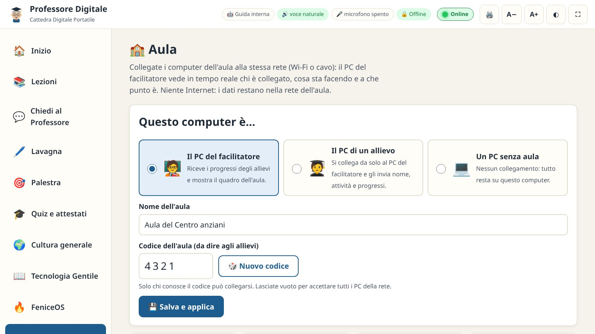
Figura 30. La pagina Aula: si sceglie che ruolo ha questo computer. Qui è il PC del facilitatore, con il nome e il codice dell'aula.
I tre ruoli
Ruolo
Cosa fa
🧑🏫
Il PC del facilitatore
Riceve i progressi degli allievi e mostra il quadro dell'aula. Ce n'è uno per aula.
🧑🎓
Il PC di un allievo
Si collega da solo al PC del facilitatore e gli invia nome, attività e progressi.
💻
Un PC senza aula
Nessun collegamento: tutto resta su questo computer. È la scelta di serie.
Preparare il PC del facilitatore
Aprite 🏫 Aula e scegliete «Il PC del facilitatore».
Scrivete il nome dell'aula (per esempio «Aula del Centro anziani») e il codice dell'aula: 🎲 Nuovo codice ne propone uno di quattro cifre
(fino a otto). Solo i PC che conoscono il codice possono collegarsi; lasciandolo vuoto si accettano tutti i PC della rete.
Premete 💾 Salva e applica. Nel riquadro «Questo PC» controllate che In ascolto per gli allievi sia ✅ (porta 8766) e Ricerca automatica ✅ attiva.
Se compare ❌ «porta occupata o bloccata dal firewall», leggete il riquadro «Il firewall» qui sotto.
Collegare i PC degli allievi
Figura 31. Sul PC dell'allievo: nome, codice dell'aula e, solo se serve, l'indirizzo del facilitatore.
Su ogni PC degli allievi aprite 🏫 Aula e scegliete «Il PC di un allievo».
Scrivete il nome dell'allievo e il codice dell'aula detto dal facilitatore.
Premete 💾 Salva e applica. Il PC cerca da solo quello del facilitatore; dopo pochi secondi compare
«✅ Collegato al PC del facilitatore». Se non lo trova, scrivete il suo indirizzo (lo vedete nel riquadro «Questo PC», per esempio 192.168.1.10).
Il PC dell'allievo invia un breve riepilogo ogni 20 secondi e, quando cambia pagina, entro pochi secondi. 🔄 Invia adesso lo manda subito.
Il quadro
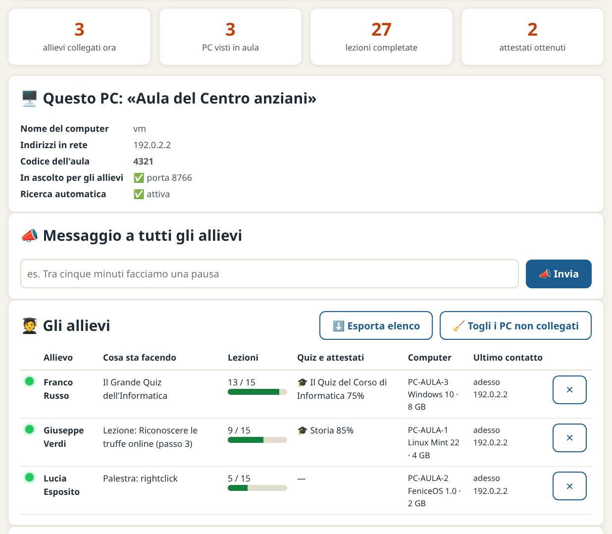
Figura 32. Il quadro del facilitatore: i numeri dell'aula, questo PC, il messaggio a tutti e l'elenco degli allievi.
I numeri: allievi collegati ora, PC visti in aula, lezioni completate e attestati ottenuti da tutto il gruppo.
Gli allievi: per ognuno un pallino verde se è collegato (grigio se non lo è più), il nome (con «😴 inattivo da N min» se è fermo da più di 5 minuti),
cosa sta facendo (per esempio «Lezione: Riconoscere le truffe online (passo 3)» o il quiz in corso), le lezioni completate con la barra,
quiz e attestati con il miglior risultato, il computer (nome, sistema, memoria, IA e microfono, un avviso se ha una versione diversa del Professore)
e l'ultimo contatto con l'indirizzo. Il pulsante ✕ toglie un PC dall'elenco.
📣 Messaggio a tutti gli allievi: scrivete, per esempio, «Tra cinque minuti facciamo una pausa» e premete 📣 Invia. Entro pochi secondi
il messaggio compare su ogni PC nella nuvoletta del Professore, letto a voce, con il pulsante Ho capito.
⬇️ Esporta elenco: salva nella cartella Scaricati il file aula-AAAA-MM-GG.csv, che si apre con LibreOffice Calc:
allievo, computer, sistema, attività, lezioni, quiz, attestati e ultimo contatto. Utile per il registro del corso.
🧹 Togli i PC non collegati: ripulisce l'elenco a fine giornata.
🔍 Cerca nella rete
In fondo alla pagina, su qualunque PC, 🔍 Cerca nella rete mostra l'indirizzo di questo computer, se Internet è collegato, i PC dei facilitatori
trovati (nome, computer, indirizzo, versione, se serve il codice) e il server degli aggiornamenti dell'aula, se c'è. È il primo controllo quando un allievo non si collega.
Il firewallIl PC del facilitatore riceve i collegamenti sulle porte 8766 TCP e 8767 UDP, solo dalla rete locale.
Su molte distribuzioni il firewall è spento e non serve fare nulla. Se sul PC del facilitatore è attivo ufw (lo vedete con sudo ufw status),
consentite le due porte e riavviate il Professore:
sudo ufw allow 8766/tcp
sudo ufw allow 8767/udp
I PC degli allievi non hanno bisogno di regole. Se nell'aula ci sono anche PC Windows con il ruolo di facilitatore, vedete il vademecum per Windows.
Cosa viaggia in rete, e cosa noIl PC dell'allievo invia al facilitatore, solo nella rete locale: il nome, la pagina in uso, le lezioni completate,
i risultati dei quiz e gli attestati, il nome e la memoria del computer. Mai le conversazioni con il Professore. Si accettano solo indirizzi della rete locale;
l'interfaccia del Professore resta sempre chiusa dentro il computer. Il quadro dell'aula funziona con il programma installato, non con la versione portatile .html.
§§c16§§
16
CAPITOLO
Guida per il facilitatore
Il Professore Digitale non sostituisce il facilitatore: gli dà una lavagna, una voce in più, un percorso già pronto, i quiz con gli attestati
e, con l'aula, uno sguardo d'insieme sul gruppo. Ecco come ottenere il meglio da un incontro.
Preparare l'aula
Computer accesi e aggiornati prima dell'arrivo del gruppo.
Professore aperto e testo ingrandito (A+).
Voce scelta (Riccardo o Paola) e volume provato con ▶ Prova la voce.
Il vostro PC impostato come facilitatore in 🏫 Aula, codice dell'aula scritto alla lavagna.
PC degli allievi collegati all'aula (✅ Collegato).
Proiettore collegato (schermi «duplicati» nelle impostazioni dello schermo) e modalità proiettore attiva.
Mouse con filo (più facili dei touchpad).
Cuffie per chi sente poco.
Un foglio con nome utente e password di ogni PC.
Risparmio energia: schermo che non si spegne durante la lezione.
Stampante pronta per gli attestati.
Questo vademecum stampato, a portata di mano.
Un incontro tipo (90 minuti)
Tempo
Attività
0–10'
Accoglienza. Caffè, nomi, cosa è successo in settimana con il telefono o il computer: spesso le domande migliori nascono qui.
Il Professore saluta ciascuno sul proprio PC.
10–20'
Riscaldamento in Palestra. Esercizio del clic, dei tasti speciali o «Riconosci la truffa»; ognuno annota il proprio record.
20–50'
La lezione del giorno, proiettata. Il facilitatore legge o fa leggere il Professore, un passo alla volta, fermandosi sulle domande.
50–60'
Pausa (con un 📣 messaggio a tutti per avvisare).
60–75'
Pratica a coppie sui PC: ripetere i passi della lezione (salvare un file, scrivere un'email…). Dal quadro dell'aula vedete chi è rimasto indietro.
75–85'
Quiz insieme, proiettato: il gruppo vota a voce, poi si legge la spiegazione. A fine percorso: il Grande Quiz individuale e gli attestati.
85–90'
Domande libere in «Chiedi al Professore», un promemoria per la volta dopo e saluti con 🚪 Esci.
Dieci consigli per insegnare agli adulti e agli anziani
Mani sul mouse loro, non vostre. Guidate a parole; toccate il mouse solo se chiesto.
Una cosa alla volta. Un passo, una prova, un sorriso. Poi il passo successivo.
Metafore concrete: il Professore ne usa molte (l'armadio, la strada, la chiave); riprendetele e aggiungete le vostre.
L'errore è benvenuto. Mostrate Ctrl + Z e il Cestino fin dal primo giorno.
Ripetere senza stancarsi. Rivedere una lezione è normale: i passi già visti restano segnati in verde.
Testo grande e voce lenta. Regolateli all'inizio, non a metà incontro.
Partite dai loro bisogni: la videochiamata con il nipote motiva più di qualsiasi teoria. La Cultura generale aiuta chi ha paura del computer: si esercita senza accorgersene.
Sicurezza sempre. Ripetete la regola d'oro: nessuno chiede password o codici per telefono.
Scrivere su carta i passaggi chiave: molti allievi ricordano meglio con un foglio accanto. Il pulsante 🖨️ stampa la lezione intera.
Celebrare i progressi. I record della Palestra, le lezioni completate e gli attestati sono piccoli traguardi da festeggiare.
Più allievi sullo stesso computer
I progressi appartengono all'utente del computer. Se più persone usano lo stesso PC, create un utente Linux per ciascuna
(Impostazioni di sistema → Utenti); oppure usate Esporta progressi a fine incontro e Importa la volta dopo.
Su FeniceOS gli allievi entrano come ospite: ricordate che in modalità live ciò che si salva non resta, quindi esportate i progressi su una chiavetta personale.
Ricordate di cambiare il nome dell'allievo in Impostazioni → Vista, perché compare nei saluti, negli attestati e nel quadro dell'aula.
§§c17§§
17
CAPITOLO
Privacy e sicurezza
Chi impara a usare il digitale deve poter sbagliare e fare domande senza timore. Per questo il Professore è costruito in modo da non far uscire nulla dal computer.
Cosa fa il programma
Il server interno ascolta solo all'interno del computer (127.0.0.1): dagli altri computer della rete l'interfaccia non è raggiungibile.
Accetta richieste solo dalla propria finestra: una pagina web estranea non può comandarlo.
IA, voci e riconoscimento vocale lavorano sul computer: domande e registrazioni non vengono inviate a nessuno. Le registrazioni del microfono vengono trascritte e cancellate subito.
Gli attestati in PDF si creano sul computer, senza servizi esterni.
Non richiede privilegi di amministratore durante l'uso.
Ogni file scaricato su vostra richiesta (aggiornamenti, contenuti) viene verificato con la sua impronta SHA-256.
Le due eccezioni, dichiarate e disattivabili
Funzione
Cosa fa in rete
Come si spegne
Indicatore «Online»
Al massimo una volta al minuto il programma apre e chiude una connessione verso un server pubblico neutrale (1.1.1.1, 9.9.9.9…) per sapere
se Internet funziona. Nessun dato viene inviato.
Impostazioni → Vista → «Indicatore «Online»»
Quadro dell'aula
Solo se scegliete un ruolo in 🏫 Aula. Il PC del facilitatore ascolta nella rete locale soltanto due indirizzi (/aula/info e
/aula/ciao, porta 8766 TCP) e risponde alla ricerca dei PC (porta 8767 UDP). Il PC dell'allievo invia ogni 20 secondi nome, pagina in uso,
lezioni completate, risultati dei quiz e attestati: mai le conversazioni. Solo indirizzi IP privati; il codice dell'aula blocca i PC estranei.
🏫 Aula → «Un PC senza aula» (è la scelta di serie)
Cosa non fa
Non crea account e non chiede dati personali (il nome per saluti e attestati è facoltativo e resta sul computer).
Non contiene pubblicità né sistemi di tracciamento.
Non scarica nulla da solo, nemmeno gli aggiornamenti.
Dove stanno i dati
Dato
Posizione
Impostazioni
~/.local/share/professore-digitale/settings.json
Progressi: lezioni, Palestra, risultati dei quiz, attestati, promemoria
~/.local/share/professore-digitale/progress.json
Conversazione (ultimi 60 messaggi)
~/.local/share/professore-digitale/history.json
Pacchetti di contenuti importati
~/.local/share/professore-digitale/contenuti/
Elenco degli allievi dell'aula (solo sul PC del facilitatore)
~/.local/share/professore-digitale/models/ e venv/
Registro tecnico
~/.local/state/professore-digitale/server.log
Versione portatile
Memoria del browser di quel computer
Il simbolo ~ indica la cartella personale dell'utente (le cartelle che iniziano con il punto sono nascoste: nel gestore dei file si vedono con
Ctrl + H). Sono semplici file di testo, leggibili e cancellabili in qualsiasi momento.
Su un computer condivisoA fine corso, o prima di donare il computer, usate professore-digitale-pulizia
(capitolo 18) oppure 🧹 Nuova conversazione e Azzera progressi.
§§c18§§
18
CAPITOLO
Manutenzione, aggiornamenti e disinstallazione
Salvare i progressi
In Impostazioni → Dati e progressi → Esporta progressi si ottiene un file da conservare su chiavetta, con lezioni, quiz, attestati e promemoria.
Per un salvataggio completo di un utente basta copiare la cartella ~/.local/share/professore-digitale. Gli attestati salvati in PDF stanno nella cartella Scaricati.
Aggiornare
In Impostazioni → Aggiornamenti premete 🌐 Controlla aggiornamenti (serve Internet in quel momento, oppure un PC dell'aula che fa da server).
Se c'è una versione nuova, leggete le novità e premete ⬇️ Scarica il nuovo pacchetto: il file va nella cartella Scaricati e viene verificato con la sua impronta.
Installatelo come la prima volta: sudo apt install ./professore-digitale_X.Y.Z_all.deb. Impostazioni e progressi vengono conservati.
Figura 33. La scheda Aggiornamenti: il Professore si collega a Internet solo quando premete il pulsante.
Nella stessa scheda si possono aggiungere i nuovi contenuti (domande, lezioni e quiz) con un clic, senza aggiornare il programma. L'indirizzo del file di versione
si può cambiare, ad esempio per usare un PC dell'aula (http://192.168.1.10:8080/aggiornamenti.json). Se il centro ha configurato il Professore come
fonte del sistema, arriva con gli altri aggiornamenti (sudo apt update e sudo apt install --only-upgrade professore-digitale).
Dalla 2.x alla 3.0Si installa sopra la versione precedente, senza disinstallare. Tutto resta al suo posto: progressi, impostazioni,
conversazione, contenuti aggiunti, IA e microfono già configurati. Le novità (quiz, cultura, aula, voci) compaiono subito. Il pacchetto della 3.0 è più grande
(circa 150 MB) perché include le voci: se scaricarlo nell'aula è lento, portatelo con una chiavetta.
Ripristino dopo un problema
Se dopo un'interruzione di corrente il Professore non si comporta bene:
professore-digitale --stop # chiude il server interno
professore-digitale # lo riapre
sudo apt install --reinstall ./professore-digitale_3.0.0_all.deb # reinstalla i file del programma
Se il microfono smette di funzionare, rifate la configurazione: professore-digitale-setup-voce --rimuovi e poi professore-digitale-setup-voce.
Disinstallazione radicale
Per restituire il computer «come nuovo», ad esempio prima di una donazione o dopo molte prove di installazione:
Pulire i dati di ogni utente che ha usato il Professore (da quell'utente):
professore-digitale-pulizia
Rimuovere il programma, le voci incluse e le icone (il pacchetto chiude da solo gli eventuali server del Professore ancora attivi):
Facoltativo, l'IA: elencare e rimuovere i modelli (ollama list, ollama rm NOME). Per togliere Ollama del tutto seguite le istruzioni ufficiali di Ollama.
Se avevate aperto le porte dell'aula nel firewall: sudo ufw delete allow 8766/tcp e sudo ufw delete allow 8767/udp.
§§c19§§
19
CAPITOLO
Risoluzione dei problemi
Prima di tutto, un comando che risolve metà dei dubbi: professore-digitale --status mostra cosa è attivo e cosa no.
Nel programma, Impostazioni → Diagnostica dice lo stesso; il registro tecnico è in ~/.local/state/professore-digitale/server.log.
Sintomo
Causa probabile
Rimedio
Clic sull'icona e non succede nulla
Nessun browser installato o PC molto lento
Aspettate fino a 45 secondi. Poi da terminale: professore-digitale; leggete il messaggio e il registro. Installate un browser: sudo apt install firefox-esr (Debian) o chromium.
Si apre il browser con barre e schede
Chromium/Chrome non installati
È normale con Firefox. Per una finestra pulita installate Chromium.
Il Professore non parla
Voce spenta, volume basso
Controllate il volume del sistema; in Impostazioni «Voce attiva» e «Prova la voce». Se mancano tutte le voci: sudo apt install espeak-ng.
Nell'elenco mancano Riccardo e Paola
PC a 32 bit o sistema troppo vecchio per Piper
Su questi computer si usano le voci leggere, maschili e femminili. Controllate con professore-digitale --status; su un sistema recente a 64 bit reinstallate il pacchetto.
La voce è molto robotica
Si sta usando la voce leggera
In Impostazioni → Voce scegliete Riccardo o Paola, se ci sono.
All'avvio il saluto si vede ma non si sente
Il browser permette la voce solo dopo un clic
È normale con alcuni browser: il Professore parla appena toccate il mouse o la tastiera.
I consigli o il saluto disturbano la lezione
Funzioni attive di serie
Impostazioni → Voce: spegnete «saluta a voce all'avvio» e/o «dà qualche consiglio».
L'indicatore «Online» è sempre grigio
Niente Internet, firewall che blocca, controllo spento
Fate clic sull'indicatore per riprovare. Se dice «non controllato», riattivatelo in Impostazioni → Vista. Il Professore funziona comunque.
«Salva in PDF» dell'attestato non funziona
Browser molto vecchio
Premete 🖨️ Stampa e nella finestra di stampa scegliete Salva come PDF (o «Stampa su file»).
L'allievo non si collega all'aula: «nessun PC del facilitatore trovato»
Reti diverse, firewall, codice sbagliato
Stessa rete per tutti. Sul facilitatore controllate «In ascolto ✅» e, se c'è ufw, aprite le porte (capitolo 15). Scrivete a mano l'indirizzo del facilitatore e ricontrollate il codice. Usate 🔍 Cerca nella rete.
Sul facilitatore: «porta occupata o bloccata dal firewall»
Firewall attivo o altro programma sulla porta 8766
sudo ufw allow 8766/tcp e sudo ufw allow 8767/udp, poi riavviate il Professore (professore-digitale --stop).
Il microfono è grigio
Riconoscimento vocale non configurato
professore-digitale-setup-voce, poi Impostazioni → Ricontrolla i componenti.
«Non ho sentito nulla»
Microfono muto, lontano o non scelto
Controllate nelle impostazioni audio del sistema il dispositivo di ingresso e il livello; parlate a 20–30 cm.
Il browser chiede il permesso per il microfono
Protezione del browser
Scegliete Consenti (e «Ricorda»): l'audio resta sul computer.
Risponde sempre la «Guida interna»
IA spenta, Ollama fermo o senza modelli
Impostazioni → «Usa l'IA» attivo. Da terminale: ollama list; se Ollama è fermo: sudo systemctl start ollama; altrimenti professore-digitale-setup-ia.
L'IA è lentissima
Modello troppo grande per il PC
Scegliete un modello più piccolo (capitolo 14). Chiudete gli altri programmi.
L'IA risponde in inglese o in modo strano
Modello molto piccolo
Riformulate la domanda in modo semplice o passate a un modello più grande; la guida interna resta un'alternativa sicura.
Lo schema non si disegna
Schema dell'IA non valido
Compare comunque la descrizione testuale. Rifate la domanda o chiedete «fammi uno schema semplice».
Le icone appaiono come quadratini
Manca il carattere delle emoji
sudo apt install fonts-noto-color-emoji, poi riavviate il Professore.
Ho perso i progressi nella versione portatile
La memoria del browser è stata cancellata
Usate regolarmente Esporta progressi; con il pacchetto .deb i progressi stanno in un file su disco.
Figura 34. Su schermi stretti il menu passa in basso.
Tablet e schermi piccoliL'interfaccia si adatta da sola alle finestre strette e agli schermi touch:
menu in basso, pulsanti grandi, lavagna utilizzabile con il dito. Utile per i netbook e per le finestre affiancate.
§§c21§§
21
CAPITOLO
Glossario semplice
Allegato
File che viaggia insieme a un'email, come una foto nella busta.
App
Programma, soprattutto sullo smartphone.
apt
Il programma che installa e aggiorna i pacchetti su Debian, Ubuntu, Mint e FeniceOS.
Attestato
Il «diploma» che il Professore consegna a chi supera un grande quiz con almeno il 70% di risposte giuste.
Browser
Programma per navigare su Internet: Firefox, Chromium, Chrome.
Cartella
Contenitore di file, come un cassetto dell'armadio.
Cestino
Dove vanno i file eliminati; da lì si possono ancora recuperare.
CIE
Carta d'Identità Elettronica, usata anche per entrare nei servizi pubblici online.
Clic / doppio clic
Una pressione del tasto sinistro per scegliere; due rapide per aprire.
Clic destro
La pressione del tasto destro del mouse: apre un menu con i comandi possibili.
Copia e incolla
Duplicare un testo o un file: Ctrl + C per copiare, Ctrl + V per incollare.
CSV
Un file di testo a forma di tabella, che si apre con Excel o LibreOffice Calc.
Desktop
La «scrivania» con le icone che si vede all'accensione.
Gestore dei file
Il programma per vedere cartelle e documenti (Nautilus, Nemo, Thunar, Dolphin…).
Facilitatore
Chi guida il gruppo: insegnante, volontario, animatore digitale.
FeniceOS
Sistema operativo libero, basato su Debian, che fa rinascere i computer datati.
File
Un documento, una foto, una musica salvati nel computer.
Firewall
Il «portinaio» del computer: decide quali collegamenti dalla rete possono entrare.
IA (intelligenza artificiale)
Programma che ha imparato da moltissimi testi a rispondere con parole probabili; utile, ma può sbagliare.
IA locale
IA che funziona sul proprio computer, senza inviare dati a Internet.
Impronta (SHA-256)
Un codice che identifica un file: se il file cambia anche di poco, l'impronta cambia. Serve a controllare che sia integro.
Internet
La rete di strade che collega i computer di tutto il mondo.
Linux
Sistema operativo libero, leggero, adatto anche ai computer datati.
Menu delle applicazioni
Il menu da cui partono tutti i programmi; il Professore è nella categoria Istruzione.
Modello
Il «cervello» dell'IA: più è grande, più sa, ma più è lento e occupa spazio.
Offline / Online
Senza / con connessione a Internet.
Ollama
Programma che fa funzionare i modelli di IA sul computer (su Linux, Windows e macOS).
pagoPA
Il sistema per i pagamenti verso la Pubblica Amministrazione.
Pacchetto .deb
Il «pacco» che contiene un programma da installare su Debian, Ubuntu, Mint e FeniceOS.
Password
La chiave segreta di un account. Non si comunica mai a nessuno.
PDF
Un formato di documento che si vede uguale su ogni computer: ideale per stampare e conservare.
Phishing
Truffa con messaggi falsi che imitano banche o enti per rubare dati.
RAM
La memoria di lavoro del computer: più ce n'è, più programmi lavorano insieme senza rallentare.
Rete locale
I computer collegati allo stesso router (stesso Wi-Fi o cavo), per esempio quelli di un'aula.
Router
La scatolina con le lucine che porta Internet in casa.
Scaricare
Copiare sul proprio computer un file che si trova su Internet; finisce nella cartella Scaricati.
Scheda video
La parte del computer che disegna le immagini; quelle potenti aiutano anche l'IA.
Schema
Disegno con riquadri e frecce che mostra una sequenza o una struttura.
Software libero
Programma che si può usare, studiare, modificare e condividere, come il Professore.
SPID
Sistema Pubblico di Identità Digitale: le credenziali per i servizi pubblici online.
Terminale
Finestra dove si danno ordini al computer scrivendo comandi.
Wi-Fi
Collegamento senza fili tra i dispositivi e il router.
Tecnologia gentile, per tutti.
Il Professore Digitale nasce per democratizzare l'accesso al digitale là dove serve di più: nei centri anziani, nelle scuole, nelle associazioni
e nelle case, anche senza connessione e su computer che altrimenti finirebbero in discarica — su Linux, su FeniceOS e su Windows.
Lezioni, quiz con attestato, cultura generale, voci italiane e un quadro dell'aula: tutto sul vostro computer, niente nel cloud.
È software libero: potete usarlo, copiarlo, migliorarlo e condividerlo. Se vi è stato utile, fatelo conoscere.
Danilo D'Auria Tecnico IT & Divulgatore Digitale per il Sociale danilodauria.site@gmail.com
Professore Digitale 3.0.0 per Linux Licenza MIT · Ottobre 2026